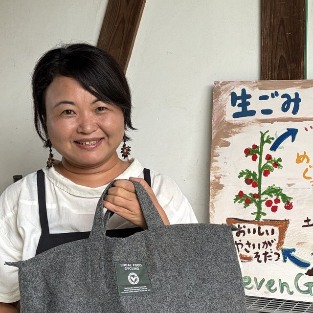
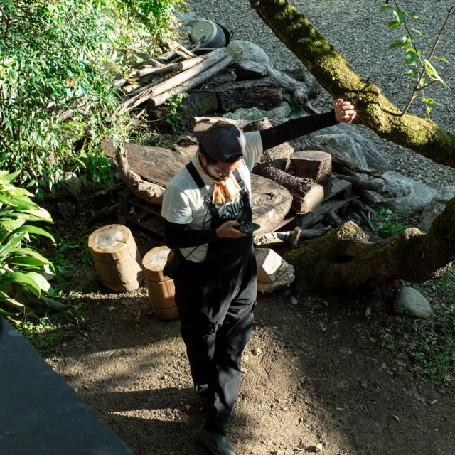
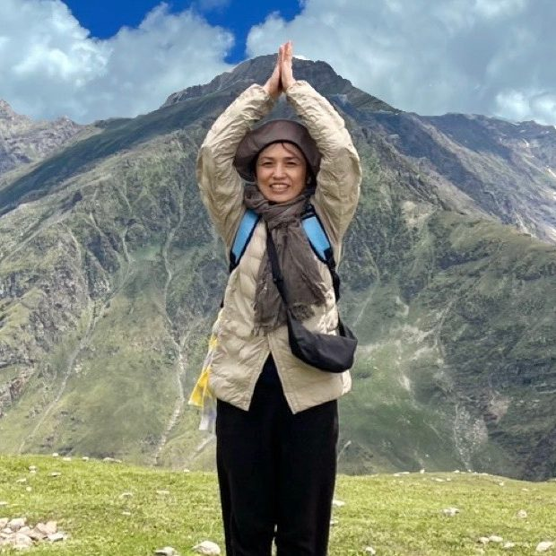

COMPOST
はじめてのコンポスト講座
森友美さん
LFCコンポストアドバイザー（大阪）
生ごみを捨てない暮らしを広めています。無印良品グランフロント大阪・大丸心斎橋でコンポスト講座と堆肥回収会を開催。
コミュニティガーデンMUSUVIVA運営スタッフ。「半径2kmの栄養循環」を実践中。
ワークショップを一緒につくってくださる方々です

COMPOST
はじめてのコンポスト講座
LFCコンポストアドバイザー（大阪）
生ごみを捨てない暮らしを広めています。無印良品グランフロント大阪・大丸心斎橋でコンポスト講座と堆肥回収会を開催。
コミュニティガーデンMUSUVIVA運営スタッフ。「半径2kmの栄養循環」を実践中。

SNS
地域コミュニティ×SNS活用講座
en.undertemple 代表
大阪府河内長野市出身。東京での営業職やオーストラリア・イギリスでの海外生活を経て、約11年ぶりに地元へ帰郷。約70年前に祖母が勤めていた築130年の旧旅館「松中亭」の再生をはじめ、複合シェアスペース「en.undertemple」をオープン。
シェアスペース運営のほか、地域イベントの企画やグラフィックデザイン、SNS広報支援、高校生との探究学習、農業・地域資源プロジェクトなど、地域に根ざした持続可能な場づくりを実践中。

YOGA
くつろぎヨガ教室
認定ヨーガ療法士／ヨーガセラピスト
日本ヨーガ療法学会・認定ヨーガ療法士。体操＋呼吸法＋瞑想法を「認定ヨーガ療法士」から学び、参加者それぞれに合った無理のないヨーガを行うことで、心身の不調の改善を目指します。
呼吸を大切にするyoga教室